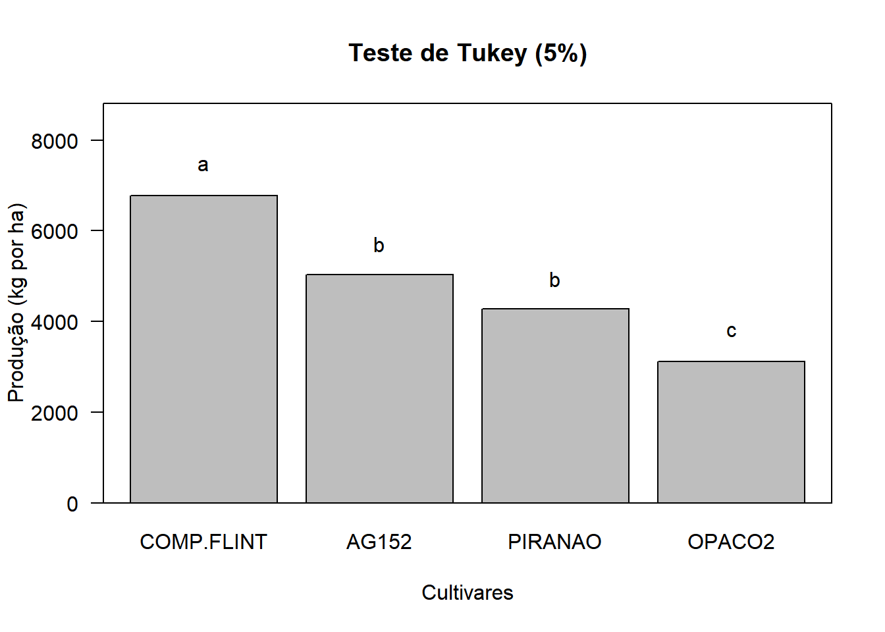

Capítulo 4 EXPERIMENTOS FATORIAIS
4.1 Introdução
Os experimentos simples, realizados de acordo com o delineamento interiamente casualizado ou em blocos casualizados, são utilizados para testar os efeitos de apenas um tipo de tratamento, ou fator, sendo os demais mantidos constantes.
Assim, por exemplo, num experimento de comparação de inseticidas em relação ao controle de uma determinada praga, devemos manter constante a dosagem, o método de aplicação, os tratos culturas, etc.
Porém, há casos em que necessitamos testar simultaneamente os efeitos de dois ou mais tipos de tratamentos (fatores) para obtermos resultados de interesse prático. Por exemplo, supondo que desejamos testar 3 inseticidas, 2 métodos de aplicação e 4 dosagens, teremos então um experimento fatorial de \(3\times2\times4\).
Os experimentos fatoriais são aqueles que nos permitem estudar, simultaneamente, os efeitos de dois ou mais tipos de fatores (tratamentos). Assim, eles devem ser instalados em um dos delineamentos já estudados (DIC, DBC, etc.).
Estes experimentos são utilizados em quase todos os campos de investigação e são bastante úteis em pesquisas iniciais, nas quais pouco se conhece a respeito de uma série de fatores.
O número de tratamentos nos experimentos fatoriais consiste de todas as combinações possíveis dos níveis dos fatores.
Por exemplo, se estamos interessados em testar o efeito de 3 inseticidas, cada um dos quais em 4 doses, teremos os 12 tratamentos seguintes.
\[ \begin{array}{} I_1 D_1 & I_2D_1 & I_3D_1 \\ I_1D_2 & I_2D_2 & I_3D_2 \\ I_1D_3 & I_2D_3 & I_3D_3 \\ I_1D_4 & I_2D_4 & I_3D_4 \end{array} \]
Neste caso, representamos o esquema fatorial como: \(\text{Fatorial }3 \times 4\) com 3 inseticidas e 4 dosagens.
As subdivisões de um fator são denominados NÍVEIS desse fator. Então, no exemplo anterior, o fator Inseticida ocorrem em 3 níveis, e o fator Dosagem ocorre em 4 nívies. Assim, no ensaio acima, podemos obter conclusões sobre a qual o melhor inseticida, qual a melhor dosagem e qual a melhor dosagem para cada inseticida.
4.2 Classificação dos Experementos Fatoriais
Fatoriais de série \(2^N\)
Nesta série são enquadrados os experimentos fatoriais em que são estudados os efeitos de N fatores cada um em 2 níveis.
BASE = Nº de Níveis
EXPOENTE = Nº de Fatores
Exemplos: \[ 2^2 \Rightarrow \text{2 Fatores em 2 Níveis} \\ 2^3 \Rightarrow \text{3 Fatores em 2 Níveis} \\ 2^4 \Rightarrow \text{4 Fatores em 2 Níveis} \\ \]
etc.
Fatoriais de série
Nesta série são enquadrados os experimentos fatoriais em que são estudados os efeitos de N fatores cada um em 3 níveis.
Exemplos: \[ 3^2 \Rightarrow \text{2 Fatores em 3 Níveis} \\ 3^3 \Rightarrow \text{3 Fatores em 3 Níveis} \\ 3^4 \Rightarrow \text{4 Fatores em 3 Níveis} \\ \] etc.
Fatoriais de série mista
Nesta série são enquadrado os fatoriais em que os fatores ocorrem em número diferente de níveis:
Exemplo: \[ 4\times 3\times 2 \Rightarrow \begin{cases} \text{1º Fator em 4 Níveis }\\ \text{2º Fator em 3 Níveis } \\ \text{3º Fator em 2 Níveis } \end{cases} \]
4.3 Casualização dos tratamentos
Para exemplificar a casualização dos tratamentos, vamos supor um experimento fatorial \(3 \times 2\), com 3 variedades de milho (\(V_1,V_2,V_3\)) e 2 níveis de adubação dom \(P_2O_5\) (\(P_1 e\; P_2\)). Se o experimento fosee instalado de acordo com o delineamento em blocos casualizados, com 4 repetições, teríamos:
 ## Análise de variância de um experimento fatorial com 2 fatores com interação não significativa
## Análise de variância de um experimento fatorial com 2 fatores com interação não significativa
Para a obtenção da análise de variância, vamos utlizar os dados adaptados do trabalho “Ensaios em condições de casa-de-vegetação para controlo químico do ‘damping-off’ em Eucalyptus saligna Sm.”, realizado por KRUGNER; CARVALHO (1971) e publicado em IPEF, n 2/3 p. 97-113. O ensaio foi realizado no delineamento inteiramente casualizado, com 3 repetições e foram estudados os efeitos sobre a altura média das mudas de Eucalytus saligna, do fatores:
Tratamento do solo (S), sendo:
\(S_1=\text{Vapam}\)
\(S_2=\text{Brometo de metila}\)
\(S_3=\text{PCNB}\)
\(S_4=\text{Testemunha}\)
Pulverização com fungicida em pós emergência, sendo:
\(F_0 = \text{Sem fungicida}\)
\(F_1 = \text{Com fungicida}\)
As alturas médias de mudas (cm) 28 dias após a semeadura foram:
| Tratamentos | Rep.1 | Rep.2 | Rep.3 | Total |
|---|---|---|---|---|
| \(S_1F_0\) | 4,65 | 5,18 | 5,52 | 15,35 |
| \(S_1F_1\) | 4,86 | 4,81 | 4,51 | 14,18 |
| \(S_2F_0\) | 4,55 | 5,16 | 6,00 | 15,71 |
| \(S_2F_1\) | 4,73 | 5,51 | 5,09 | 15,33 |
| \(S_3F_0\) | 2,68 | 2,65 | 2,56 | 7,89 |
| \(S_3F_1\) | 2,90 | 2,71 | 2,93 | 8,54 |
| \(S_4F_0\) | 3,48 | 2,75 | 3,06 | 9,29 |
| \(S_4F_1\) | 2,65 | 2,47 | 2,83 | 7,95 |
| Total | 94,24 |
Os dados podem ser encontrados online em solofungi.txt
4.4 Aplicação em R - Fatorial com Interação Não Significativa

Utilizando as funções básicas e o pacote agricolae
# Carregando o pacote para análise de variância
library(agricolae)
library(tidyverse)
# Definindo o caminho do banco de dados
caminho<-"https://raw.githubusercontent.com/arpanosso/curso_GIEU/master/dados/solofungi.txt"
# Entrada da dados
dados<-read.table(caminho,h=TRUE)
#Guardando os fatores (tratamentos de solo e fungicidas) e a variável resposta (y)
solos<-as.factor(dados$S)
fungicida<-as.factor(dados$F)
y<-dados$y
# Gráfico da interação
dados %>%
group_by(S,F) %>%
summarise(Y = mean(y)) %>%
ggplot(aes(x=S, y=Y,col=as.factor(F)))+
geom_line()+
labs(x="Tratamentos do solo",y="Altura de plantas (cm)",col="Fungicida")## `summarise()` regrouping output by 'S' (override with `.groups` argument)
dados %>%
group_by(S,F) %>%
summarise(Y = mean(y)) %>%
ggplot(aes(x=F, y=Y,col=as.factor(S)))+
geom_line()+
labs(x="Fungicida",y="Altura de plantas (cm)",col="Tratamentos do solo")## `summarise()` regrouping output by 'S' (override with `.groups` argument) Analise considerando o delineamento de tratamentos
Analise considerando o delineamento de tratamentos
## Analysis of Variance Table
##
## Response: y
## Df Sum Sq Mean Sq F value Pr(>F)
## solos 3 30.3951 10.1317 74.0035 1.35e-09 ***
## fungicida 1 0.2091 0.2091 1.5271 0.2344
## solos:fungicida 3 0.4128 0.1376 1.0051 0.4161
## Residuals 16 2.1905 0.1369
## ---
## Signif. codes: 0 '***' 0.001 '**' 0.01 '*' 0.05 '.' 0.1 ' ' 1Medias dos efeitos principais e da interação
## Tables of means
## Grand mean
##
## 3.926667
##
## solos
## solos
## 1 2 3 4
## 4.922 5.173 2.738 2.873
##
## fungicida
## fungicida
## 0 1
## 4.020 3.833
##
## solos:fungicida
## fungicida
## solos 0 1
## 1 5.117 4.727
## 2 5.237 5.110
## 3 2.630 2.847
## 4 3.097 2.650SE A INTERAÇÃO FOR NÃO SIGNIFICATIVA
Comparações múltiplas (Tukey) para os efeitos principais
##
## Study: mod ~ "solos"
##
## HSD Test for y
##
## Mean Square Error: 0.1369083
##
## solos, means
##
## y std r Min Max
## 1 4.921667 0.3699414 6 4.51 5.52
## 2 5.173333 0.5270547 6 4.55 6.00
## 3 2.738333 0.1460708 6 2.56 2.93
## 4 2.873333 0.3556778 6 2.47 3.48
##
## Alpha: 0.05 ; DF Error: 16
## Critical Value of Studentized Range: 4.046093
##
## Minimun Significant Difference: 0.6111885
##
## Treatments with the same letter are not significantly different.
##
## y groups
## 2 5.173333 a
## 1 4.921667 a
## 4 2.873333 b
## 3 2.738333 b##
## Study: mod ~ "fungicida"
##
## HSD Test for y
##
## Mean Square Error: 0.1369083
##
## fungicida, means
##
## y std r Min Max
## 0 4.020000 1.283589 12 2.56 6.00
## 1 3.833333 1.162867 12 2.47 5.51
##
## Alpha: 0.05 ; DF Error: 16
## Critical Value of Studentized Range: 2.997999
##
## Minimun Significant Difference: 0.3202254
##
## Treatments with the same letter are not significantly different.
##
## y groups
## 0 4.020000 a
## 1 3.833333 aSE A INTERAÇÃO FOR SIGNIFICATIVA
Desdobramento de Tratamento de Solos dentro Fungicida
# Redefinindo o modelo para o estudo das interações
modab <- aov(y~fungicida/solos) # Colocar os Controles locais, blocos, se for o caso
# Observe a posição dos efeitos que tem a interação fungicida:solos
effects(modab)## (Intercept) fungicida1 fungicida0:solos2 fungicida1:solos2
## -19.23665945 0.45723809 -2.43333333 -2.55333333
## fungicida0:solos3 fungicida1:solos3 fungicida0:solos4 fungicida1:solos4
## 2.08832203 1.19029641 2.47398464 2.54338685
##
## 0.22214988 0.08861007 0.21297776 0.54969732
##
## 0.02094651 -0.15636171 -0.43154093 -0.17709510
##
## 0.56214988 -0.21138993 1.05297776 0.12969732
##
## -0.06905349 0.06363829 -0.12154093 0.18290490
## attr(,"assign")
## [1] 0 1 2 2 2 2 2 2
## attr(,"class")
## [1] "coef"## fungicida0:solos2 fungicida1:solos2 fungicida0:solos3 fungicida1:solos3
## -2.433333 -2.553333 2.088322 1.190296
## fungicida0:solos4 fungicida1:solos4
## 2.473985 2.543387summary(modab,split=list("fungicida:solos"=list(Fung0=c(1,3,4), # tem fungicida 0
Fung1=c(2,4,6)))) # tem fungicida 1## Df Sum Sq Mean Sq F value Pr(>F)
## fungicida 1 0.209 0.209 1.527 0.234
## fungicida:solos 6 30.808 5.135 37.504 1.50e-08 ***
## fungicida:solos: Fung0 3 11.699 3.900 28.484 1.18e-06 ***
## fungicida:solos: Fung1 3 14.405 4.802 35.072 2.89e-07 ***
## Residuals 16 2.191 0.137
## ---
## Signif. codes: 0 '***' 0.001 '**' 0.01 '*' 0.05 '.' 0.1 ' ' 1Desdobramento de Fungicida dentro Tratamento de Solo
# Redefinindo o modelo para o estudo das interações
modba <- aov(y~solos/fungicida) # Colocar os Controles locais, blocos, se for o caso
# Observe a posição dos efeitos que tem a interação solos:fungicida
effects(modba)## (Intercept) solos2 solos3 solos4
## -19.23665945 3.52610582 -2.31833333 -3.54781740
## solos1:fungicida1 solos2:fungicida1 solos3:fungicida1 solos4:fungicida1
## 0.47765050 -0.15513435 -0.26536139 0.54705271
##
## 0.27843631 0.23598418 0.17014073 0.45811440
##
## 0.04648794 -0.42110079 -0.34919980 -0.18139452
##
## 0.61843631 -0.06401582 1.01014073 0.03811440
##
## -0.04351206 -0.20110079 -0.03919980 0.17860548
## attr(,"assign")
## [1] 0 1 1 1 2 2 2 2
## attr(,"class")
## [1] "coef"## solos1:fungicida1 solos2:fungicida1 solos3:fungicida1 solos4:fungicida1
## 0.4776505 -0.1551344 -0.2653614 0.5470527summary(modba,split=list("solos:fungicida"=list(Tsolo1=1, # tem solo 1
Tsolo2=2, # tem solo 2
Tsolo3=3, # tem solo 3
Tsolo4=4 # tem solo 4
))) ## Df Sum Sq Mean Sq F value Pr(>F)
## solos 3 30.395 10.132 74.004 1.35e-09 ***
## solos:fungicida 4 0.622 0.155 1.136 0.375
## solos:fungicida: Tsolo1 1 0.228 0.228 1.666 0.215
## solos:fungicida: Tsolo2 1 0.024 0.024 0.176 0.681
## solos:fungicida: Tsolo3 1 0.070 0.070 0.514 0.484
## solos:fungicida: Tsolo4 1 0.299 0.299 2.186 0.159
## Residuals 16 2.191 0.137
## ---
## Signif. codes: 0 '***' 0.001 '**' 0.01 '*' 0.05 '.' 0.1 ' ' 1Utilizando ao pacrote ExpDes.pt, mais prático
# Carregando o pacote para análise de variância
library(ExpDes.pt)
# Definindo o caminho do banco de dados
caminho<-"https://raw.githubusercontent.com/arpanosso/curso_GIEU/master/dados/solofungi.txt"
# Entrada da dados
dados<-read.table(caminho,h=TRUE)
#Guardando os fatores (tratamentos de solo e fungicidas) e a variável resposta (y)
solos<-dados$S
fungicida<-dados$F
y<-dados$y
# Utilizando a função fat2.dic do pacote ExpDes.pt
fat2.dic(solos,fungicida,y,fac.names = c("Trat.Solo", "Fungicida"))## ------------------------------------------------------------------------
## Legenda:
## FATOR 1: Trat.Solo
## FATOR 2: Fungicida
## ------------------------------------------------------------------------
##
##
## Quadro da analise de variancia
## ------------------------------------------------------------------------
## GL SQ QM Fc Pr>Fc
## Trat.Solo 3 30.395 5 74.004 0.00000
## Fungicida 1 0.209 4 1.527 0.23439
## Trat.Solo*Fungicida 3 0.413 3 1.005 0.41607
## Residuo 16 2.191 2
## Total 23 33.208 1
## ------------------------------------------------------------------------
## CV = 9.42 %
##
## ------------------------------------------------------------------------
## Teste de normalidade dos residuos (Shapiro-Wilk)
## valor-p: 0.6260575
## De acordo com o teste de Shapiro-Wilk a 5% de significancia, os residuos podem ser considerados normais.
## ------------------------------------------------------------------------
##
## Interacao nao significativa: analisando os efeitos simples
## ------------------------------------------------------------------------
## Trat.Solo
## Teste de Tukey
## ------------------------------------------------------------------------
## Grupos Tratamentos Medias
## a 2 5.173333
## a 1 4.921667
## b 4 2.873333
## b 3 2.738333
## ------------------------------------------------------------------------
##
## Fungicida
## De acordo com o teste F, as medias desse fator sao estatisticamente iguais.
## ------------------------------------------------------------------------
## Niveis Medias
## 1 0 4.020000
## 2 1 3.833333
## ------------------------------------------------------------------------